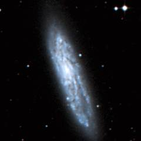
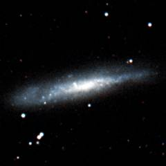
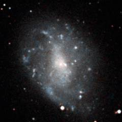
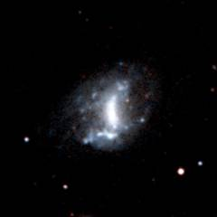
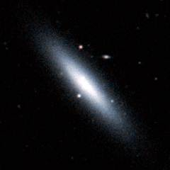
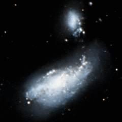
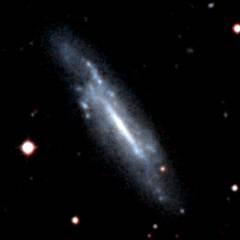
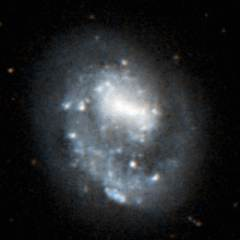
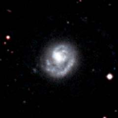

تجمع (السلوقيان II) المجري
مجموعة كانيس II المجرية هي مجموعة بارزة من المجرات تبعد 30 مليون سنة ضوئية في كوكبة السلوقيان وتحتوي على المجرة الكبيرة M106. تقع هذه المجموعة مباشرة خلف مجموعة كانيس I المجرية، وهناك العديد من مجموعات المجرات في هذه المنطقة من السماء التي تتصل في النهاية بالعنقود المجري الضخم في كوكبة العذراء والذي يبعد خمسين مليون سنة ضوئية.
أدناه - ثلاث مجرات من مجموعة كانيس II. (على اليمين) NGC 4096. و(في الوسط)NGC 4144 هما مجرتان حلزونيتان متشابهتان جدًا تُرى من زوايا مختلفة. و(على اليسار) NGC 4242 هي مجرة غير منتظمة تحتوي على قضيب مركزي وعلامات خافتة على بنية حلزونية.
 |
 |
 |
| NGC 4096 |
NGC 4144 |
NGC 4242 |
مجرات التجمع المجري السلوقيان II
هذه قائمة بأهم المجرات في مجموعة كانيس II. تقع مجموعة السلوقيان II مباشرة خلف مجموعة السلوقيان I، وقد يكون من الصعب تحديد المجرات التي تنتمي إلى أي مجموعة. من المحتمل أن تكون المجموعتان متصلتين، لذا قد يكون الحد الفاصل بينهما تعسفيًا إلى حد ما.
| الاسم |
الإحداثيات الاستوائية
مطلع مستقيم RA ميل Dec |
القدر الأزرق |
النوع |
الحجم الزاوي
دقائق قوسية(′) |
الحجم
(ألف سنة ضوئية) |
سرعة التقهقر
(كم/ث) |
أسماء أخرى |
| NGC 4096 |
12 06.0 |
+47 29 |
11.5 |
SBc |
6.5 |
55 |
770 |
|
| NGC 4144 |
12 10.0 |
+46 27 |
12.2 |
SBc |
6.0 |
55 |
481 |
|
| UGC 7267 |
12 15.4 |
+51 22 |
15.3 |
Sd |
1.7 |
15 |
660 |
|
| UGC 7271 |
12 15.6 |
+43 26 |
15.5 |
Sc |
1.6 |
15 |
772 |
|
| UGC 7298 |
12 16.5 |
+52 13 |
17? |
Irr |
1.3 |
10 |
354 |
|
| UGC 7320 |
12 17.5 |
+44 49 |
? |
Sd |
0.9 |
10 |
740 |
|
| NGC 4242 |
12 17.5 |
+45 37 |
11.7 |
SBm |
4.8 |
40 |
733 |
|
| NGC 4248 |
12 17.8 |
+47 25 |
13.4 |
SBb |
2.4 |
20 |
693 |
|
| M106 |
12 19.0 |
+47 18 |
9.1 |
SBb |
17.0 |
150 |
656 |
NGC 4258 |
| UGC 7356 |
12 19.2 |
+47 05 |
15.8 |
Irr |
0.9 |
10 |
480 |
|
| NGC 4288 |
12 20.6 |
+46 18 |
13.4 |
SBc |
2.2 |
20 |
746 |
|
| UGC 7408 |
12 21.3 |
+45 49 |
13.4 |
Irr |
2.6 |
20 |
675 |
DDO 120 |
| UGC 7599 |
12 28.5 |
+37 14 |
14.9 |
Sm |
1.9 |
15 |
527 |
DDO 127 |
| UGC 7608 |
12 28.8 |
+43 14 |
13.7 |
Irr |
3.5 |
30 |
760 |
DDO 129 |
| NGC 4460 |
12 28.8 |
+44 52 |
12.8 |
S0 |
4.1 |
35 |
711 |
|
| UGC 7639 |
12 29.9 |
+47 32 |
14.5 |
Irr |
2.4 |
20 |
585 |
|
| KK151 |
12 30.4 |
+42 54 |
16.5 |
Sc |
1.1 |
10 |
660 |
PGC 41314 |
| NGC 4485 |
12 30.5 |
+41 42 |
12.5 |
Irr |
2.4 |
20 |
725 |
|
| NGC 4490 |
12 30.6 |
+41 38 |
10.6 |
SBc |
6.3 |
55 |
809 |
|
| UGC 7678 |
12 32.0 |
+39 50 |
16.1 |
SB? |
0.9 |
10 |
921 |
|
| UGC 7690 |
12 32.4 |
+42 42 |
13.4 |
Irr |
1.6 |
15 |
762 |
|
| UGC 7699 |
12 32.8 |
+37 37 |
13.6 |
SBc |
3.8 |
35 |
743 |
|
| UGC 7719 |
12 34.0 |
+39 01 |
15.3 |
Sd |
1.9 |
15 |
920 |
|
| UGC 7751 |
12 35.1 |
+41 03 |
17.6 |
Irr |
0.7 |
5 |
835 |
|
| UGC 7774 |
12 36.4 |
+40 00 |
15.0 |
Sc |
3.0 |
25 |
758 |
|
| UGC 7827 |
12 39.7 |
+44 51 |
17? |
Irr |
1.2 |
10 |
765 |
|
| NGC 4618 |
12 41.6 |
+41 09 |
11.4 |
SBd |
4.4 |
40 |
771 |
|
| NGC 4625 |
12 41.9 |
+41 16 |
13.1 |
SBm |
2.1 |
20 |
837 |
|
| UGC 7949 |
12 47.0 |
+36 29 |
15.1 |
Irr |
1.9 |
15 |
578 |
DDO 147 |
| NGC 4707 |
12 48.4 |
+51 10 |
13.4 |
Sm |
2.2 |
20 |
646 |
|
|
- العمود 1: الاسم الشائع للمجرة.
- العمود 2: المطلع المستقيم لعصر 2000.
- العمود 3: الميل لعصر 2000.
- العمود 4: القدر الظاهري الأزرق للمجرة.
- العمود 5: نوع المجرة: E = إهليلجية، S0 = عدسية، Sa, Sb, Sc, Sd = حلزونية، SBa, SBb, SBc, SBd = حلزونية محدبة، Sm, SBm, Irr = غير منتظمة.
- العمود 6: القطر الزاوي للمجرة (دقيقة قوسية).
- العمود 7: قطر المجرة (بالآلاف من السنوات الضوئية).
- العمود 8: السرعة الانزياحية (كم/ثانية) للمجرة بالنسبة إلى إشعاع الخلفية الكونية الميكروي.
- العمود 9: أسماء أخرى للمجرة.
المراجع:
- Giuricin G, Marinoni C, Ceriani L, Pisani A, (2000), Nearby optical galaxies: selection of the sample and identification of groups. Astrophys J, 543, 178.
- Garcia A, (1993), General study of group membership. II. Determination of nearby groups. Astron Astrophys Supp, 100, 47.
- Fouqué P, Gourgoulhon E, Chamaraux P, Paturel G, (1992), Groups of Galaxies within 80 Mpc, Astron and Astrophys Supp, 93, 211.
- The HyperLeda Database, (2003).
أدناه - ثلاث مجرات أخرى في مجموعة السلوقيان II. NGC 4288 (على اليمين) هي مجرة حلزونية محدبة صغيرة. NGC 4460 (في الوسط) هي مثال ممتاز لمجرة عدسية (شبيهة بالعدسة) تُرى تقريبًا من الحافة. NGC 4490 (على اليسار) هي مجرة حلزونية أصبحت مشوهة بسبب لقاء قريب مع المجرة المرافقة لها NGC 4485 التي تعلوها.
 |
 |
 |
| NGC 4288 |
NGC 4460 |
NGC 4490 |
في الأسفل تظهر مجرة M106 - وهي أكبر مجرة في مجموعة السلوقيان II على الرغم من أنها ربما تقع في مقدمة المجموعة. هذه المجرة مشابهة في الحجم لمجرة المرأة المسلسلة (أندروميدا). تشتهر M106 بمنطقتها الداخلية اللامعة وأذرعها الحلزونية الخارجية الباهتة جدًا.
أدناه - ثلاث مجرات أخرى في مجموعة السلوقيان II. UGC 7699 (على اليمين) هي مجرة حلزونية محدبة صغيرة. NGC 4618 (في الوسط) وNGC 4625 (على اليسار) هما مجرتان حلزونيتان تحتويان على ذراع حلزوني واحد فقط. هاتان المجرتان قريبتان من بعضهما البعض، ومن المحتمل أن لقاءً قريبًا حديثًا قد جعلهما تبدوان متشابهتين جدًا.
 |
 |
 |
| UGC 7699 |
NGC 4618 |
NGC 4625 |
| خصائص تجمع (السلوقيان II) كانيس II |
|---|
| الإحداثيات الاستوائية |
RA=12h30m |
Dec=+43° |
| الإحداثيات المجرية |
l=135° |
b=+75° |
| الإحداثيات المجرية الفائقة |
L=75° |
B=+5° |
| المسافة إلى مركز المجموعة المجرية |
30 مليون سنة ضوئية |
| عدد المجرات الكبيرة في المجموعة |
9 |